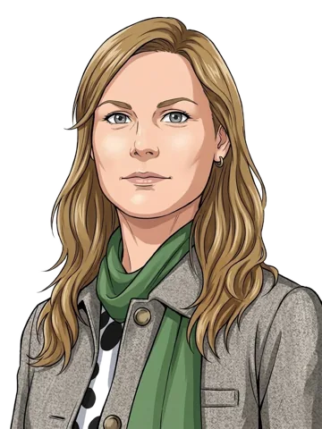

Waar de Kamer over sprak
Elk onderwerp met alle debatten erover op een tijdlijn, en hoe over de moties gestemd is. Het onderwerp waarover het laatst gedebatteerd is, staat bovenaan. Wat letterlijk gezegd is, staat achter een dikke zwarte streep met het woord “Letterlijk” erboven.
12 november 2026 · 1 debat
Advies van het Nationaal Burgerberaad Klimaat
Wat moet er gebeuren met het advies van het Nationaal Burgerberaad Klimaat?

“Het kabinet neemt nu echter vooral de vrijwillige en minder ingrijpende opties over. … Er is mandaat en draagvlak om ook meer verplichtende keuzes te maken, zelfs als die soms iets meer pijn doen.”
Christine TeunissenPvdD · 3 zetels · oppositie ▶ 21.37 uur · Bekijk dit moment (Debat Direct)Lees in het verslag
“Ik zal ook eerlijk zeggen dat we bij de VVD ook blij zijn dat het kabinet niet alle aanbevelingen heeft overgenomen, want in de politiek moeten we ook andere belangen beschermen.”
Alisha MüllerVVD · 22 zetels · coalitie ▶ 22.00 uur · Bekijk dit moment (Debat Direct)Lees in het verslag
Videolinks openen Debat Direct, de site van de Tweede Kamer.
- 12 november 2026Debat in de plenaire zaal, 2 delen
5 moties (verzoeken aan de regering); de uitslagen staan op de tijdlijn.
Bekijk de tijdlijn en hoe het afliep10 november 2026 tot en met 12 november 2026 · 2 debatten
Pakket Belastingplan 2027
Moet het Belastingplan worden aangepast met het amendement van PRO en Volt?

“Is er binnen de drie coalitiepartijen, in welke situatie dan ook, nog steun voor het Belastingplan? Gaan de drie coalitiepartijen voor het Belastingplan stemmen of gaat men verdeeld stemmen?”
Stephan van BaarleDENK · 3 zetels · oppositie ▶ 11.04 uur · Bekijk dit moment (Debat Direct)Lees in het verslag

“Ik ben woordvoerder van de grootste coalitiepartij; ik ben geen woordvoerder van alle coalitiepartijen. Maar ik denk het wel, omdat dit Belastingplan de basis is voor alle begrotingen en voor alles wat we samen willen doen.”
Jan PaternotteD66 · 26 zetels · coalitie ▶ 11.04 uur · Bekijk dit moment (Debat Direct)Lees in het verslag
Videolinks openen Debat Direct, de site van de Tweede Kamer.
- 10 november 2026Debat in de plenaire zaal, 6 delen
- 12 november 2026Debat in de plenaire zaal, 6 delen
17 moties (verzoeken aan de regering); de uitslagen staan op de tijdlijn.
Bekijk de tijdlijn en hoe het afliep11 november 2026 · 1 debat
Begroting Buitenlandse Zaken 2027
Moet Nederland de wapeninkoop uit Israël direct stoppen of afbouwen?

“Mijn vraag was: is D66 dan ook bereid om te zeggen "wij importeren nu gewoon geen wapens meer uit Israël"? Die wapens zijn namelijk getest op Palestijnen.”
Sarah DobbeSP · 3 zetels · oppositie ▶ 11.44 uur · Bekijk dit moment (Debat Direct)Lees in het verslag

“De wapens die je nu al ergens anders kunt importeren, zouden wat ons betreft ook ergens anders geïmporteerd moeten worden. We moeten zo snel mogelijk aan de slag met het deel waarvoor er alternatieven moeten worden gevonden.”
Hanneke van der WerfD66 · 26 zetels · coalitie ▶ 11.45 uur · Bekijk dit moment (Debat Direct)Lees in het verslag
Videolinks openen Debat Direct, de site van de Tweede Kamer.
- 11 november 2026Debat in de plenaire zaal, 6 delen
Geen moties in onze gegevens.
Bekijk de tijdlijn en hoe het afliep11 november 2026 · 1 debat
Raad Buitenlandse Zaken d.d. 16 november 2026
Wat moet Nederland inbrengen in de Raad Buitenlandse Zaken?
“De motie vroeg om binnen de Europese Unie voor maatregelen te pleiten als het E1-project doorgaat. Voor welke maatregelen gaat deze minister pleiten?”
Sarah DobbeSP · 3 zetels · oppositie ▶ 11.02 uur · Bekijk dit moment (Debat Direct)Lees in het verslag
“Binnen de Europese context pleiten wij al langer voor een breed pakket aan maatregelen om de druk op Israël op te voeren. Dat blijf ik doen, zoals meerdere malen in het debat met de Kamer gezegd.”
Tom Berendsenminister van Buitenlandse Zaken ▶ 11.03 uur · Bekijk dit moment (Debat Direct)Lees in het verslag
Videolinks openen Debat Direct, de site van de Tweede Kamer.
- 11 november 2026Tweeminutendebat
7 moties (verzoeken aan de regering); de uitslagen staan op de tijdlijn.
Bekijk de tijdlijn en hoe het afliep11 november 2026 · 1 debat
Sahelregio
Wat moet Nederland doen in de Sahelregio?

“Religieuze leiders zijn eigenlijk een soort influencers, maar dan zonder TikTokaccount, maar religie kan ook een bron zijn van desinformatie en worden gebruikt om geweld te legitimeren. Voor een effectief buienlandbeleid moet je dus heel goed begrijpen wat de rol van religie is.”
Elles van ArkCDA · 18 zetels · coalitie ▶ 10.18 uur · Bekijk dit moment (Debat Direct)Lees in het verslag
In dit debat stonden geen twee sprekers duidelijk tegenover elkaar; daarom één citaat.
Videolinks openen Debat Direct, de site van de Tweede Kamer.
- 11 november 2026Tweeminutendebat
4 moties (verzoeken aan de regering); de uitslagen staan op de tijdlijn.
Bekijk de tijdlijn en hoe het afliep10 november 2026 · 1 debat
Wetgevingsoverleg begrotingsonderdeel politie (artikel 31)
Voortzetting wetgevingsoverleg begrotingsonderdeel politie (artikel 31)


 +5
+5- 10 november 2026Wetgevingsoverleg (commissie), 2 delen
28 moties (verzoeken aan de regering); de uitslagen staan op de tijdlijn.
Bekijk de tijdlijn en hoe het afliep9 november 2026 tot en met 10 november 2026 · 2 debatten
Novelle uitbreiding vermogenswinstbelasting box 3
Moet de vermogenswinstbelasting in box 3 worden uitgebreid?

“Ik heb een- en andermaal gevraagd … om alsjeblieft in ieder geval te zorgen voor een dekking met zo'n maatregel in het vermogensdomein die nog enigszins wordt gedragen … Waarom heeft de minister dat niet gedaan?”
Pieter GrinwisChristenUnie · 3 zetels · oppositie ▶ 17.20 uur · Bekijk dit moment (Debat Direct)Lees in het verslag

“Ik snap de reflectie die de heer Grinwis daarop doet, maar neemt u mij niet kwalijk dat ik ook in de Eerste Kamer koffiedrink en naar meerderheden zoek en dat de partijen op wier steun ik reken voor deze hele operatie daar hebben aangegeven dat met erf- en schenkbelasting hun steun vervalt.”
Eelco Heinenminister van Financiën ▶ 17.21 uur · Bekijk dit moment (Debat Direct)Lees in het verslag
Videolinks openen Debat Direct, de site van de Tweede Kamer.
- 9 november 2026Wetgevingsoverleg (commissie), 7 delen
- 10 november 2026Debat in de plenaire zaal
3 moties (verzoeken aan de regering); de uitslagen staan op de tijdlijn.
Bekijk de tijdlijn en hoe het afliep10 november 2026 · 1 debat
Vragenuur
Is het ministerie aansprakelijk voor het lagere loon van uitzendkrachten?
In dit vragenuur 3 onderwerpen: Onderbetaling van uitzendkrachten; Gentest bij borstkanker en screening; Kosten van zware jeugdzorg voor gemeenten.

“Minister Kamp heeft willens en wetens een praktijk toegestaan waarvan hij wist dat die juridisch omstreden was. … Mijn eerste vraag aan de minister is dan ook: acht hij het ministerie aansprakelijk?”
Mariëtte PatijnPRO · 20 zetels · oppositie ▶ 14.00 uur · Bekijk dit moment (Debat Direct)Lees in het verslag

“Het staat mensen vrij om daarover alsnog in beroep te gaan en naar de rechter te gaan, maar er is volgens mij niets gebeurd wat niet door de beugel kon. Ik ga hier nu ook geen uitspraken doen over wie daar dan verantwoordelijk voor is en niet.”
Hans Vijlbriefminister van Sociale Zaken en Werkgelegenheid ▶ 14.01 uur · Bekijk dit moment (Debat Direct)Lees in het verslag
Videolinks openen Debat Direct, de site van de Tweede Kamer.
9 november 2026 · 1 debat
Wetgevingsoverleg over de begrotingen van de ministeries EZ, BZK en JenV voor zover het onderwerpen betreft die zien op digitalisering
Wetgevingsoverleg over de begrotingen van de ministeries EZ, BZK en JenV voor zover het onderwerpen betreft die zien op digitalisering



+7- 9 november 2026Wetgevingsoverleg (commissie), 8 delen
16 moties (verzoeken aan de regering); de uitslagen staan op de tijdlijn.
Bekijk de tijdlijn en hoe het afliep9 november 2026 · 1 debat
Wetgevingsoverleg OCW-begroting, onderdeel Cultuur
Wetgevingsoverleg OCW-begroting, onderdeel Cultuur


 +2
+2- 9 november 2026Wetgevingsoverleg (commissie), 4 delen
10 moties (verzoeken aan de regering); de uitslagen staan op de tijdlijn.
Bekijk de tijdlijn en hoe het afliep
Stemmingsrondes
De momenten waarop de Kamer stemde. De uitslag van elke motie staat bij het onderwerp waar ze bij hoort.